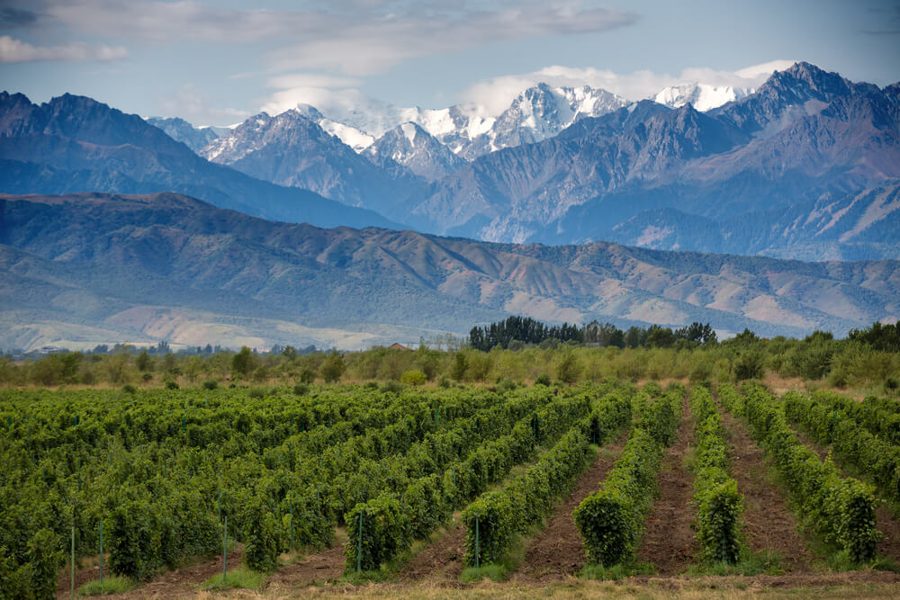

Natural Beauty
Argentina is a country rich in naturan beauty. Acually it has one of the best veiews around all the world.
Iguazu Falls
What are the Iguazu Falls? & Where is it located?
The semicircular waterfall at the heart of this site is some 80 m high and 2,700 m in diameter and is situated on a basaltic line spanning the border between Argentina (misiones) and Brazil. Made up of many cascades producing vast sprays of water, it is one of the most spectacular waterfalls in the world. The surrounding subtropical rainforest has over 2,000 species of vascular plants and is home to the typical wildlife of the region: tapirs, giant anteaters, howler monkeys, ocelots, jaguars and caymans.
Salinas Grandes
What are they? & where are located?
The Salinas Grandes ('Salina' is a spanish word for salt flat) is a large salt flat in central-northern Argentina, spanning the borders of four provinces (Córdoba, Catamarca, La Rioja and Santiago del Estero), at an average altitude of 180 metres (590 ft) above sea level, and having an area of about 4,700 km2.
Perito Moreno Glacier
What is it? & Were is it located?
The Perito Moreno Glacier is a glacier located in Los Glaciares National Park in southwest Santa Cruz Province, Argentina. It is one of the most important tourist attractions in the Argentine Patagonia.

Aconcagua
What is it? & Were is it located?
Aconcagua is a mountain in the Principal Cordillera of the Andes mountain range, in Mendoza Province, Argentina. It is the highest mountain in the Americas, the highest outside Asia, and the highest in both the Western Hemisphere and the Southern Hemisphere with a summit elevation of 6,961 metres (22,838 ft). It lies 112 kilometres (70 miles) northwest of the provincial capital, the city of Mendoza, about five kilometres (three miles) from San Juan Province, and 15 km (9 mi) from Argentina's border with neighbouring Chile. The mountain is one of the Seven Summits of the seven continents.
Iberá Wetlands
What is it? & Were is it located?
The Iberá Wetlandsare a mix of swamps, bogs, stagnant lakes, lagoons, natural slough, and courses of water in the center and center-north of the province of Corrientes, Argentina. Iberá is one of the most important freshwater reservoirs in South America.
Hill of Seven Colors
What is it? & Were is it located?
Hill of Seven Colors, is one of the hills that are part of the western branch of the Quebrada de Humahuaca narrow mountain valley, located in the northwestern part of the Argentine Republic. Being located on the Andes Mountains, this alluring place offer varied landscapes and also makes a great magnetic location for visitors. As it is one of the most photographed places in Argentina, there is also an indigenous village called Quebrada de Purmamarca. The complex geological history including marine sediments, lake and river movements elevated with the movement of the tectonic plates gave the unique features of this impressive hill. Furthermore, comprised out of 7 different colors, all of which derive from different types of rocks which have been formed during different time periods.

Nahuel Huapi lake
What is it? & Were is it located?
Lake Nahuel Huapí, largest lake (210 sq mi [544 sq km]) and most popular resort area in Argentina’s lake district, lying in the wooded eastern foothills of the Andes at an altitude of 2,516 ft (767 m).
Mendoza Vineyards
What is it? & Were is it located?
Located in the northern-central part of Argentina and near the incredible Andes Mountains, Mendoza wine region has more than a thousand wineries in it. Mendoza vineyards produce the majority of Argentinian wine and are one of the top destinations in New World countries. 